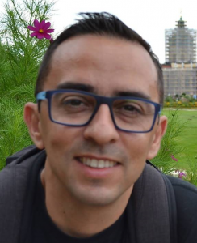
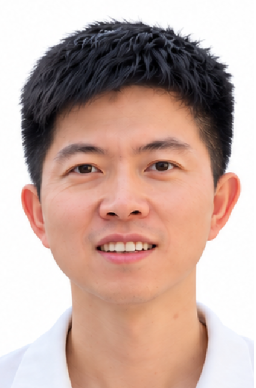
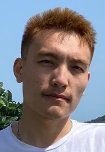

Research
Computer vision and deep learning
A broad range of computer vision problems, from human pose recovery and behavior analysis to generative models of people and motion.
Topological and geometrical deep learning
Neural networks studied through topological and geometrical methods, in theory and in computer vision applications. More
Projects
- 2024–2028STAGE — Person-centred solutions and care for ageing with multi-morbidity in the European regions
- 2023–2027AI4HF — Trustworthy AI for personalised risk assessment in chronic heart failure
- 2022–2027Youth-GEMs — Gene-environment interactions in mental health trajectories of youth
People








